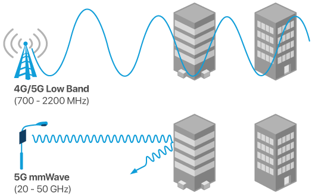

Probleme aktueller drahtloser Übertragungen
Gegenwärtig gibt es zwei kabellose Möglichkeiten für schnelles Internet. Beide haben ihre Vor- und Nachteile:
- WLAN
- Schnell
- Nur an bestimmten Orten
- 4G
- Langsam (verglichen mit WLAN)
- An vielen Orten
- Nur für mobile Geräte
5G versucht eine Lösung für die Kernprobleme zu schaffen:
- 5G
- Schnell und an allen Orten
- Einsatz für alle Geräte
Dabei wird zwischen folgenden Anwendungsgebieten unterschieden:
- mMTC (Massive Machine Type Communication)
- Internet of Things (IoT)
- Ziel: Totale Konnektivität
- eMBB (Enhanced Mobile Broadband)
- Mobilgeräte
- Ziel: Schnelleres Internet überall
- uRLLC (Ultra-reliable and Low Latency Communication)
- Anwendungen mit extrem geringer Latenz
- Autonomes Fahren, Industrie
- Ziel: Technologien der Zukunft verwirklichen
Beispiele für die Nutzung von 5G
🚗 Vernetztes Fahren: Durch die hohen Übertragungsgeschwindigkeiten von 5G könnte man alle Autos in Echtzeit miteinander vernetzen und so autonomeres Fahren ermöglichen. Beispiele:
- Automatisches Erkennen und Umgehen von Staus
- Unfälle automatisch verhindern
- bessere Verkehrskoordination
🏥 Medizin: Die niedrige Latenzen von 5G können die Medizin revolutionieren. Beispiele:
- Kabellose OP-Geräte
- Sofortige Übertragung großer medizinischer Dokumente
- Echtzeit Daten über alle Maschinen und Patienten in einem Krankenhaus und Krankenwägen
📶 Mobiles Internet: Unterwegs könnte man mit 5G bisher unvorstellbare Geschwindigkeiten erreichen: Mit bis zu 100Gbit/s (100-mal schneller als 4G) und Latenzen unter 10ms (4G: 50-100ms) könnte man:
- Ganze Netflix Staffeln in unter 10 Sekunden herunterladen
- Multiplayer Spiele in Echtzeit spielen.
5G ist so schnell, dass ein Internet komplett ohne Ladezeiten möglich ist.
Technologie
Funkfrequenz
Mit 5G möchte man die Übertragungsgeschwindigkeit im Air Interface, also zwischen Funkzelle und Endgerät, verbessern. Das Übertragungsmedium sind hier die Funkwellen.
5G maximiert die Übertragungsgeschwindigkeit zwischen Endgerät und Funkzelle durch eine Erhöhung der Frequenz.
Die sog. Millimeter-Wellen (mmWaves), mit denen bei 5G gesendet wird, befinden sich im Bereich von 24GHz-90GHz, statt den 450MHz-5,8GHz von 4G. Durch die erhöhte Frequenz wird eine größere Bandbreite und niedrigere Latenz ermöglicht.
Problem: Millimeter Wellen haben eine niedrigere Reichweite und werden leichter abgefangen, z.B. von Mauern. Im höheren Bereich (60GHz) können sie sogar von der Luft blockiert werden.
Lösung: Um für die geringere Reichweite und höhere Störanfälligkeit des Signals zu kompensieren, werden deutlich mehr Funkzellen als bisher benötigt. Dadurch soll eine ungestörte Verbindung ermöglicht werden.
Kleinzellen
Kleinzellen sind Funkzellen mit geringer Sendeleistung (ca. 150m) und ergänzen Funkzellen in dicht besiedelten gebieten. Sie sind kompakt und können praktisch überall angebracht werden. Durch eine extrem hohe Anzahl von Kleinzellen soll die geringe Reichweite von 5G umgangen werden:
Mehrantennen Systeme (MIMO)
Nutzung von mehreren Antennen sowohl an Funkzellen als auch Endgeräten, um die Bandbreite zu erhöhen und Latenz zu reduzieren.
Beamforming
Beim Beamforming wird der Sendestrahl nach dem Endgerät ausgerichtet. Das Gerät wird durch einen Kontrollstrahl erkannt und dann gezielt angefunkt. Im Vergleich zu WLAN, welches das Signal in alle Richtungen verteilt, entsteht somit nur ein gezielter Strahl. Dieser Strahl passt sich automatisch den Bewegungen des Zielgeräts an.
Aktuelle Lage
Smartphones
Für die Nutzung von 5G wird ein 5G-fähiges Gerät benötigt. Dazu wird ein neuer Chip im Smartphone benötigt, beispielsweise von Qualcomm. Die Entwicklung verläuft seit dem ersten 5G fähigen Chip in 2018, dem Snapdragon 855, sehr schwierig: Qualcomm spricht von einer "Exponentiellen Komplexität" der neuen Technologie. Hier ist eine Abbildung der benötigten extra-Komponenten im Vergleich zu 4G:

Man benötigt erstens ein extra 5G Modem, welches fast so groß wie der gesamte bisherige SoC ist und wegen der Mehrantennen-System Technologien mehrere Antennen, welche an allen Seiten des Geräts angebracht sind. Dadurch entstehen folgende Nachteile:
- Weniger Platz für den Akku
- Höherer Energieverbrauch durch 5G Modem und Antennen
- Trotz mehrerer Antennen ist eine Blockierung des Signals durch die Hand möglich
Netzausbau (Stand Anfang 2021)
Trotz der vielen Werbung (Ziel der Telekom: 80% bis Ende 2021) ist der tatsächliche Nutzen von 5G derzeit verschwindend gering. "Echtes 5G" mit seinen besonders hohen Übertragungsgeschwindigkeiten gibt es nur im Zentrum vom Zentrum von Großstädten, z.B. München. Auf der 5G Netzausbau Karte der Telekom ist fast alles in 5G Farben (lila) gefärbt, beim genauen Betrachten der Übertragungsgeschwindigkeit erkennt man jedoch die tatsächliche Steigerung:

Am Beispiel Regensburg erreicht das 5G Netz nur eine Steigerung von +-75MBit/s.1 Zweifelhaft ist ebenfalls, ob 5G überhaupt die Städte verlassen wird. Für großflächige Gebiete sind niedrigere Frequenzen, also 4G oder 4G, deutlich besser geeignet.
Quellen
- https://arstechnica.com/gadgets/2018/12/dont-buy-a-5g-smartphone-at-least-not-for-a-while/
- https://www.physlink.com/education/askexperts/ae175.cfm
- https://isl.co/2019/02/5g-as-explained-using-a-coffee-shop-analogy-plus-what-to-know-for-2019/
- https://www.youtube.com/watch?v=_CTUs_2hq6Yxq
- https://www.informationszentrum-mobilfunk.de/technik/funktionsweise/5g
- https://cerclair.ch/assets/pdf/33_2018_06_D_Informationsblatt_5G_Zukunft_des_MobilfunksAuswirkungen_auf_die_Behörden.pdf
- https://www.computerweekly.com/de/antwort/Was-ist-5G-Massive-MIMO-und-wie-erhoeht-es-die-Bandbreite
- Weitere Quellen sind direkt im Handout verlinkt.
-
Zuletzt geprüft am 06.03.2021 ↩︎